Aer UI before and after
All three pages at the requested 1440px and 390px viewport widths. Each image is a full-page browser capture. Scroll inside a frame to inspect the complete page, or open the image at native size. Original and revised views use the same default 15 January 2026 / 09:30 GMT context and the same Elexon data.
Decision desk 1440px viewport

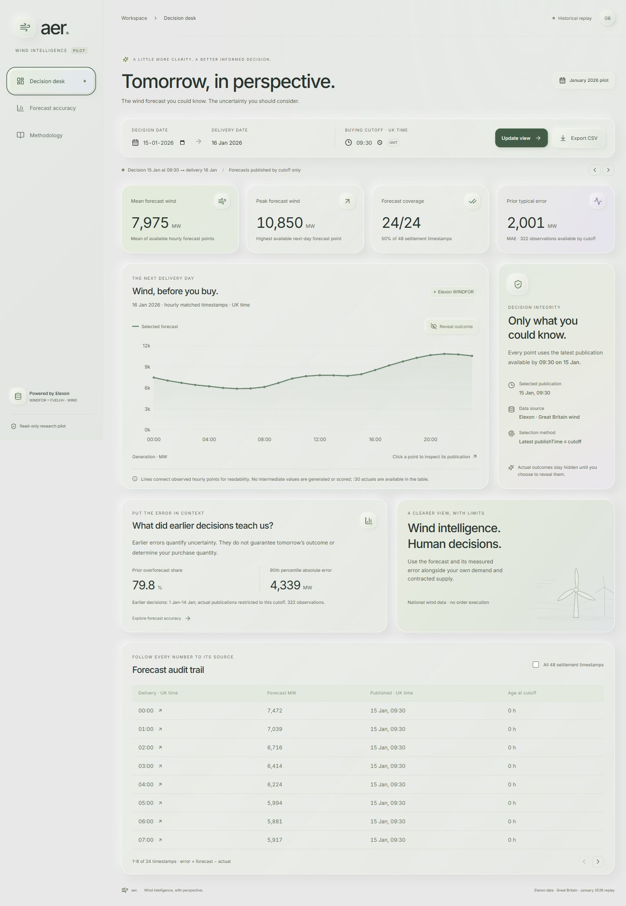

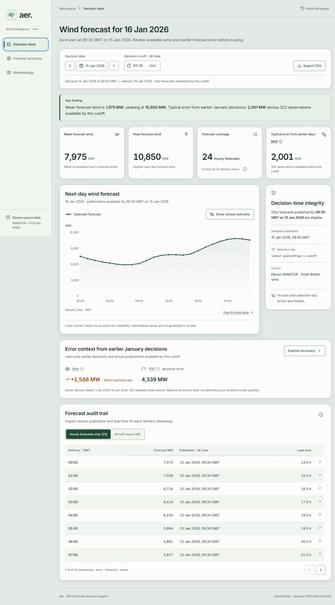
Forecast accuracy 1440px viewport

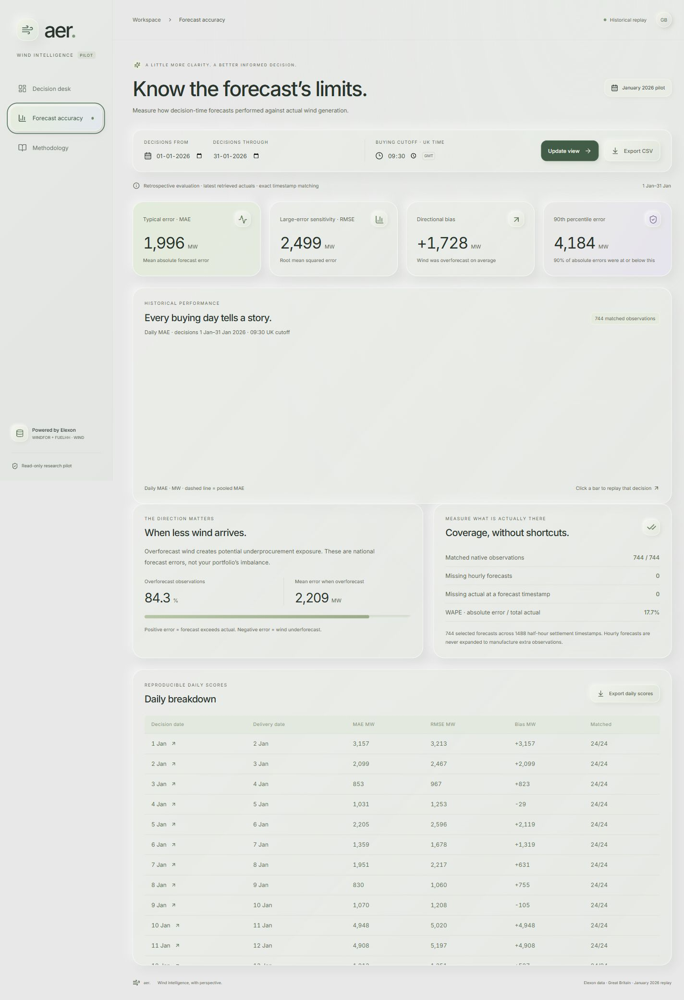

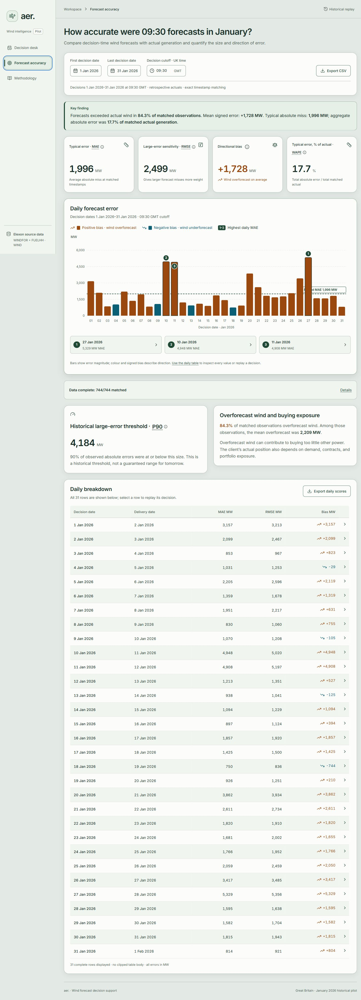
Methodology 1440px viewport

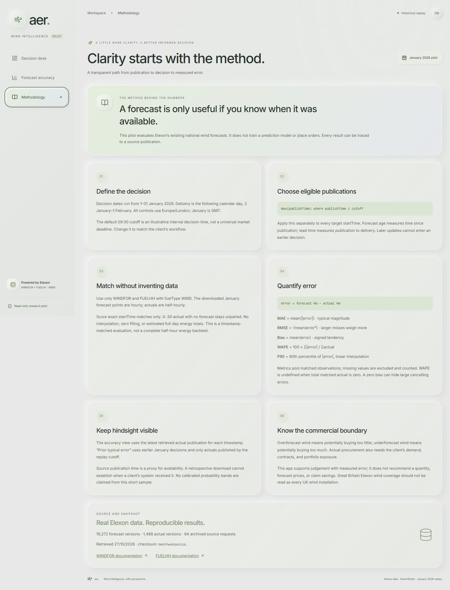

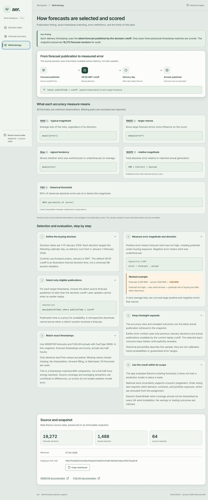
Decision desk 390px viewport

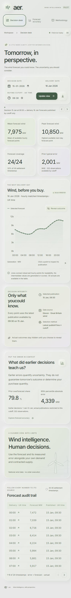

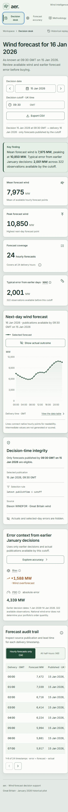
Forecast accuracy 390px viewport

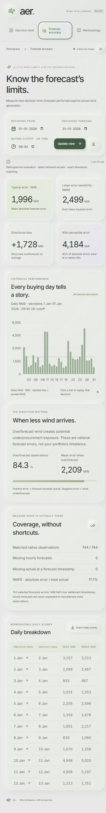

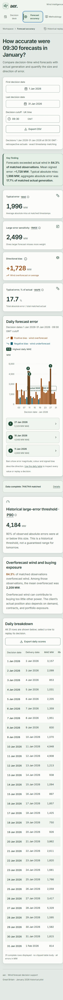
Methodology 390px viewport

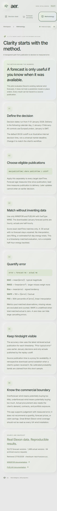

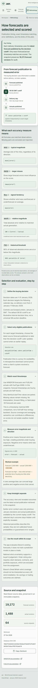